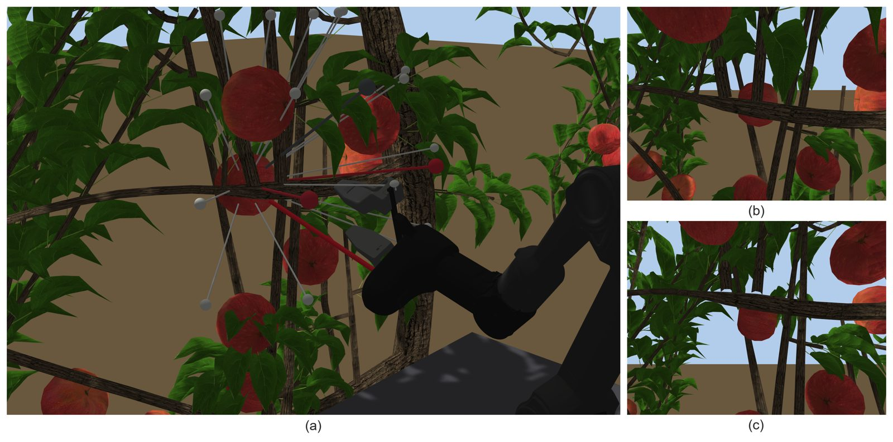
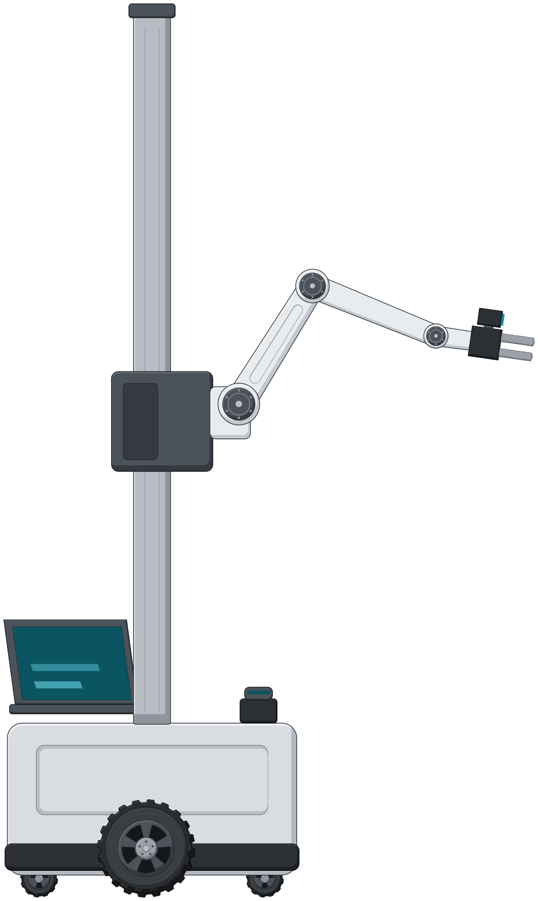
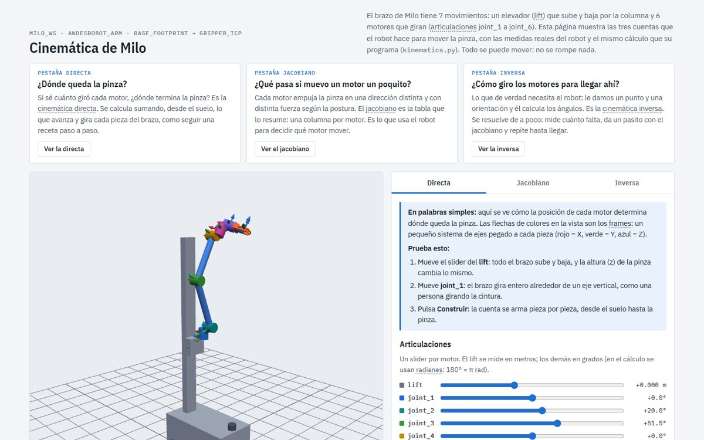
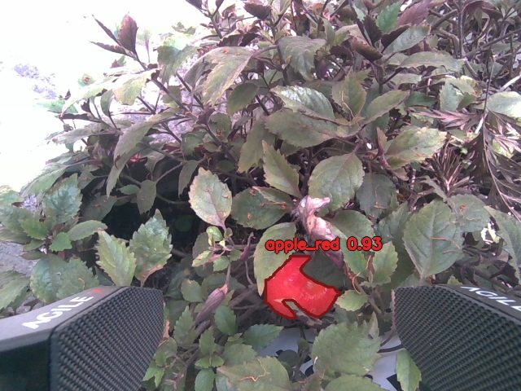

Fondecyt de Iniciación 11240105 (ANID)
Improving fruit post-harvest process based on human-robot interaction and artificial intelligence techniques. Investigador responsable: Dr. Juan Pablo Vásconez.
Improving fruit post-harvest process based on human-robot interaction and artificial intelligence techniques. Investigador responsable: Dr. Juan Pablo Vásconez.
Intelligent Robot-based Active Perception System for Enhanced Fruit Harvesting and Transport. Con este proyecto se compraron los brazos PiPER de la plataforma de mi tesis.
Iniciativa Científica Milenio. Presenté la segmentación robusta de manzanas con YOLO11-seg en su Jornada de Verano 2026.
Diseño e implementación de prototipo detector de frutos basado en visión e IA, proyecto del Dr. Juan Pablo Vásconez.
Proyectos Kura (detección de patógenos en alimentos con visión e IA) y Neuron Spider (robótica biomimética): investigación de soluciones, hardware, software, apoyo en electrónica y robótica, e interfaz web con simulación basada en agentes.

Mi rama del kit Pika de AgileX para ROS 2 Humble: modelo del PiPER con la pinza Pika y sus cámaras D405 y ojo de pez, simulación en Gazebo con las cámaras de la pinza en los mismos topics del hardware, manzanos generados con Helios (tres densidades y seis iluminaciones), herramienta de renders y una demostración de siguiente mejor vista con la visibilidad validada. Aquí vivirá el código de percepción activa de la tesis.
Teleoperación del brazo PiPER con el Pika Sense, el mando con que el operador mueve el efector final; mi rama se puede usar también en simulación. Es la base del modo de respaldo de la tesis, en el que el operador recupera el fruto y su demostración queda registrada.

Milo es el manipulador móvil del equipo de la UNAB para RoboCup@Home: base diferencial, columna con elevador, brazo de 6 grados de libertad y cámara Orbbec en la pinza. Mi parte es el brazo: cinemática inversa, MoveIt 2 y OctoMap en Gazebo, y el diseño de un planificador de vistas. Es el segundo robot con que la tesis mostrará que el método no depende del robot.

Página interactiva que explica la cinemática directa, el jacobiano y la cinemática inversa del brazo de Milo en palabras simples, con las medidas de su URDF: cada fórmula trae su lectura y un ejemplo con números.
Maqueta 3D en el navegador de la cosecha con un robot de transporte. Reproduce y valida las corridas del simulador MATLAB del manuscrito enviado a Biosystems Engineering y las extiende a otros huertos, cuadrillas y robots, con las dimensiones reales del robot Clearpath Warthog.

Entrenamiento, evaluación y análisis por nivel de visibilidad de YOLO11-seg y YOLO26-seg, y de Mask2Former en un fork de MMDetection; es el código del artículo aceptado en ARTIIS 2026.